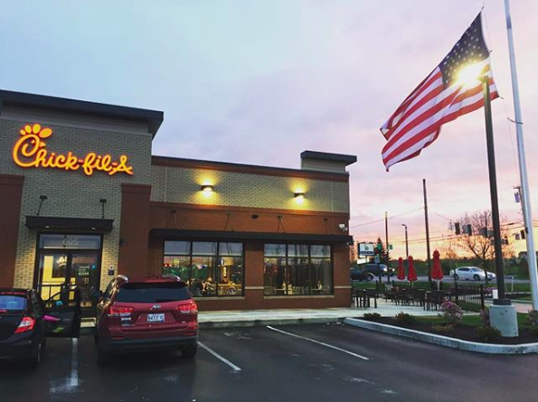

I started working at Chick-fil-A in the fall of 2016 when we first opened. I have been promoted a few times within our Bangor location.
My first was becoming a Trainer for our store. This position involved training newly onboarded team members and training them the "Chick-fil-A way." I was then promoted to Team Leader about 4-5 months after. This position consists of setting up the shift, and leading through busy rushes while keeping things under control. It also consists of counting down the drawers from the shift and making sure everything is running smoothly.
In the summer of 2018, I started applying for what Chick-fil-A calls Grand Openings. In this position I am a Corporate Trainer, and I am able to travel around the US to different stores that are opening and help train the new team members and leaders that will be running that store. To this point in time I have served at only a couple Grand Openings but am excited to do more and help serve and train new future Owner/Operators
I have throughly enjoyed my time with Chick-fil-A and can not wait to see what my future holds. Currently I am wanting to Own/Operate my own Chick-fil-A in the future.
